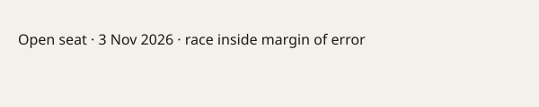

Michigan · 2026 midterms · 21 October 2026
Abdul El-Sayed and Mike Rogers traded questions of loyalty and Trump in their final debate for Michigan’s open Senate seat.

What is agreed across desks
On the evening of 21 October 2026, Democratic nominee Abdul El-Sayed and Republican nominee Mike Rogers met for their second and final debate at WXYZ-TV studios in Southfield, outside Detroit. The seat is the open one being vacated by retiring Democratic Senator Gary Peters. The election is 3 November. Both candidates and the networks agree the hour was testy but less interrupted than their earlier debate. El-Sayed repeatedly linked Rogers to President Trump and invited the audience to play “MAGA bingo.” Rogers questioned El-Sayed’s résumé and alleged associations with groups such as the Muslim Brotherhood or Hamas; El-Sayed denied the associations and called the questions “beneath you.” Rogers described some tariffs on Canada as a “mixed bag.” Polling averages published by outlets place the race inside or near the margin of error.
What is only a quote
Rogers’s claim that El-Sayed’s supporters overlap with those of designated terrorist organizations is an allegation. El-Sayed’s claim that Rogers is a “sock puppet” for Trump is campaign rhetoric. Neither statement was independently verified on stage. The candidates’ descriptions of their own past positions on Medicare for All, the Iran war, or tariffs are self-reports.
Mechanism and history a reader needs
Michigan has not elected a Republican senator since 1994. The open seat is one of a small number that could decide control of the Senate. El-Sayed, a physician and former Wayne County health director, would be the first Muslim member of the Senate if elected. Rogers is a former U.S. representative. In a close race, each side’s advertising and debate lines are designed to raise doubts about the opponent’s fitness rather than to introduce new legislative text. The recorded exchange is therefore a sample of the campaign’s closing arguments, not a fact-finding hearing.
What the story is not
It is not a prediction of the 3 November result. It is not a finding that either candidate has or has not associated with any foreign group. It is not an evaluation of the underlying policy merits of tariffs, the Iran conflict, or health-care financing.

Source articles and scores
| Outlet | Headline | T | N | C |
|---|---|---|---|---|
| AP | In final Michigan Senate debate, El-Sayed and Rogers question each other’s loyalties | 95 | 0 | 100 |
| NBC | Abdul El-Sayed and Mike Rogers’ second debate clash sets up final sprint in Michigan | 93 | −5 | 95 |
| Detroit Free Press | 5 takeaways from final Michigan U.S. Senate debate | 94 | 0 | 98 |